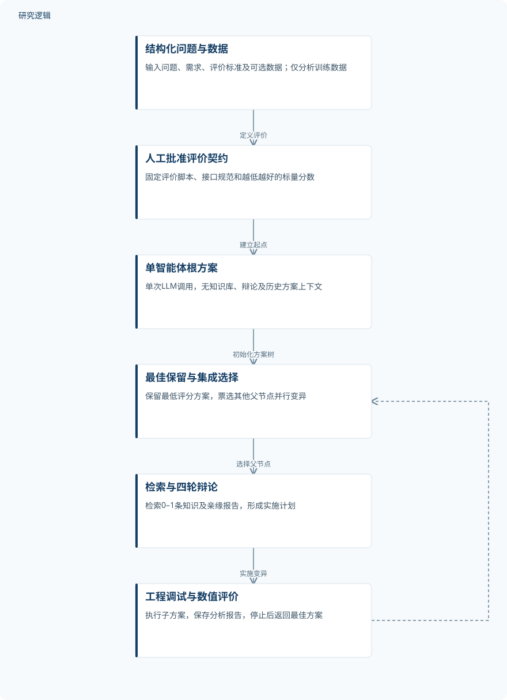
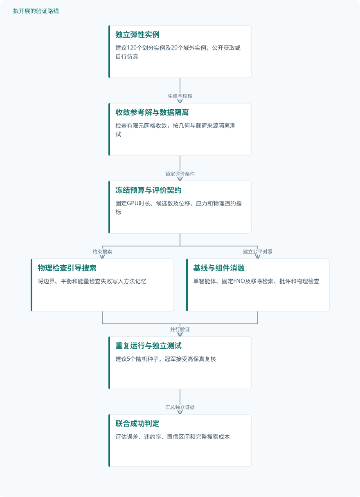

论文精读
AgenticSciML：面向科学机器学习涌现发现的协作多智能体系统
AgenticSciML: collaborative multi-agent systems for emergent discovery in scientific machine learning
精读更新 2026-10-03 15:42 · 依据论文全文整理
科学机器学习的难点，常常不是选一个网络，而是把方程结构、物理约束、采样与优化组织成有效方案。Jiang与Karniadakis提出的AgenticSciML，让超过10个专门化智能体协同检索、辩论、编程和评价，在六项计算任务中迭代改进模型。其价值在于展示了自动组合建模策略的可能性；但巨大改进倍数主要相对单次调用生成的根方案，尚不能直接解释为对成熟人工方法的同等领先。
文章目录
从调参数转向组织科学建模策略
PINN与神经算子的性能不仅取决于网络规模，还受边界约束、损失权重、配点分布和训练动力学影响。原文将这一过程称为专家驱动的研究流程：面对奇异角点或陡峭梯度，研究者往往需要重新组织建模策略，而非沿用统一参数配置。
AgenticSciML试图自动化这种策略组织能力。实际检索的《Automated machine learning: past, present and future》摘要以搜索空间、搜索策略和性能评价概括AutoML；本文则把搜索对象进一步扩展到物理约束与求解机制。《Towards end-to-end automation of AI research》摘要讨论更完整的科研生命周期，不能作为本文数值可靠性的旁证。
评价契约、方法记忆与进化树如何闭环
流程首先接收问题、需求、评价标准及可选数据，再生成评价脚本和接口规范，经人工批准后固定评价契约。数据分析代理只分析训练数据，不分析验证数据；根方案由单次LLM调用产生，不使用知识库、辩论或历史方案，因此它是起点基线，而非等预算搜索对照。
知识库包含70个SciML技术条目，由人工选择论文及公开代码，再借助模型整理方法与参数。每次变异检索0–1条相关知识，同时读取亲缘节点的分析报告；提案者与批评者在所有实验中进行4轮讨论，随后由工程、调试和结果分析代理完成数值闭环。
进化树保留当前最佳方案，并由选择器集成票选其他父节点并行变异。形成的策略包括Poisson求解中的u＝u_nn＋u_p与角点幂律采样，以及反导数DeepONet的线性无偏置分支。作者所谓“涌现”指策略不在知识库条目中，不等于证明其在既有文献中从未出现。
AgenticSciML的原研究闭环


原研究从人工批准的评价契约出发，通过方法检索、四轮辩论与数值评价扩展方案树；图中不表示新增实验。
下载 SVG图示关系说明
实线表示相邻阶段的信息流，虚线表示跨阶段联系或反馈。
结构化问题与数据 → 人工批准评价契约：定义评价；人工批准评价契约 → 单智能体根方案：建立起点；单智能体根方案 → 最佳保留与集成选择：初始化方案树；最佳保留与集成选择 → 检索与四轮辩论：选择父节点；检索与四轮辩论 → 工程调试与数值评价：实施变异；工程调试与数值评价 → 最佳保留与集成选择：评分与报告反馈
六项计算任务与一项受控检索消融
实际验证覆盖不连续函数逼近、L形域Poisson、Burgers PINN、反导数算子、多输入反应扩散算子和圆柱尾流重构。它们属于计算建模验证，提供资料没有交代独立样本、仿真数量或实物试件，也未提供各任务训练、验证、测试的规模与比例；4个传感器、70个条目和进化轮数均不能充当样本数。
最清晰的受控实验是不连续函数逼近的知识库消融。Full KB、No KB和Random KB从同一根方案出发，固定其他配置，使用相同训练集与测试集，各进行6轮演化，变异批量为4；最佳MSE分别为1.4631 × 10⁻³、3.4208 × 10⁻³和3.0315 × 10⁻²，但缺少独立重复和误差区间。
全部实验使用NVIDIA A6000 GPU，训练成本与语言模型成本需要分开看。反应扩散任务的GPU训练和LLM调用分别为10.7 h与2.1 h；单次实验LLM API费用为$2.07–$11.30，不包含已明确核算的GPU费用。补充材料未提供，因此不能把这些资料缺项直接判定为全文未报告。
| 验证任务 | 样本与规模 | 主要结果 |
|---|---|---|
| 不连续函数逼近与知识库消融 | 独立样本、仿真及增强数量未报告；6轮演化、变异批量4及70条知识库条目均不是样本数。 | 总体改进194×。Full KB、No KB、Random KB最佳MSE分别为1.4631 × 10⁻³、3.4208 × 10⁻³、3.0315 × 10⁻²；后两者约为Full KB的2.3倍和20.7倍。冠军采用混合专家与可学习sigmoid门控；消融轨迹展示有界门控锐度和界面重点加权。 |
| Burgers方程PINN求解 | 独立方程实例、仿真、配点和增强数量未报告；3次进化迭代不代表3个样本。 | 图1改进11169×；最终阶段使用双精度L-BFGS微调。3次进化迭代的LLM API费用为$2.07。 |
| 多输入反应扩散算子学习 | 独立输入函数、方程实例、仿真及增强数量未报告。 | 改进15.6×。冠军为导数增强损失训练的二维FNO，将一维输入扩展到二维时空网格，并硬约束边界和初始条件；GPU训练10.7 h，LLM调用2.1 h。 |
| 四传感器圆柱尾流涡量重构 | 4为传感器数量；独立流场、快照、仿真和增强数量未报告。 | 改进10.3×。修改后的U-FNO解码器上采样引入受CNO启发的保带限高斯滤波器，以减轻混叠。 |
展开数据来源、分组、对照与验证边界
不连续函数逼近与知识库消融
数据来源。分段振荡且存在不连续点的函数；具体表达式、定义域、采样方式与来源在提供资料中未报告。
分组与工况。Full KB、No KB、Random KB；非知识库因素固定，从同一根方案开始，各演化6轮。
数据划分。三组使用相同训练集与测试集；数量、比例、验证集设置及随机种子未报告。
对照与消融。总体性能以单次LLM调用、无知识库和无辩论的根方案为基线；消融以Full KB为参照。
评价指标。图1为根方案分数/冠军分数；表2为Best MSE，越低越好。MSE公式、归一化、单位与评价点数未报告。
验证边界。只有一个任务开展该知识库消融；缺少独立重复、误差条及等计算预算核算，无法判断统计显著性。详细补充材料未提供。
Burgers方程PINN求解
数据来源。时间依赖非线性Burgers方程，周期边界与具有挑战性的初始条件；黏性系数、时空范围及参考解来源未报告。
分组与工况。训练依次包括初始/边界条件预训练、梯度增强残差与自适应权重、残差驱动配点细化及优化；不是三组独立试验。
数据划分。训练、验证、测试划分未报告。
对照与消融。单智能体根方案；强PINN基线、等预算对照及三阶段训练消融的具体结果未报告。
评价指标。根方案分数/冠军分数，无量纲；具体损失定义、单位及评价范围未报告。
验证边界。缺少绝对误差、各阶段预算、重复运行及方程参数，不能判断不同黏性和初始条件下的适用范围。
多输入反应扩散算子学习
数据来源。将扩散系数与源项函数映射为随时间变化的方程解；数据名称、来源和生成细节未报告。
分组与工况。输入含扩散系数和源项函数；参数范围及分组工况未报告。
数据划分。训练、验证、测试数量与函数级划分方式未报告。
对照与消融。单智能体根方案；检索U-FNO、gPINN和CNO不代表完成了对应方法的实测对照。
评价指标。根方案分数/冠军分数，无量纲；绝对分数、具体指标与导数损失权重未报告。
验证边界。缺少独立函数数量、测试划分和硬约束消融，无法核对泛化收益及各组件贡献。
四传感器圆柱尾流涡量重构
数据来源。二维圆柱尾流涡量场，使用4个传感器与含噪测量；数据来源及是否来自实测未明确。
分组与工况。传感器布置、噪声强度与流动工况分组未报告。
数据划分。训练、验证、测试划分未报告。
对照与消融。单智能体根方案；标准U-FNO、CNO或移除滤波器的定量对照未报告。
评价指标。根方案分数/冠军分数，无量纲；绝对重构误差和指标定义未报告。
验证边界。无法区分快照级与独立流场级泛化，也不能核验噪声鲁棒性及滤波器的独立作用。
显著提升成立，组件归因与泛化仍待补足
图1报告六项任务相对根方案的改进依次为194×、927×、11169×、669×、15.6×和10.3×，定义是根方案分数除以冠军分数，越低越好。它们不是统一指标上的横向排名，绝大多数任务缺少可核对的绝对分数；Burgers的巨大倍数也不能直接证明优于强人工基线。
知识库消融支持相关检索有助于找到更好的方案，而随机检索可能干扰搜索。No KB仍能明显改善，说明检索并非唯一贡献来源；但未见移除批评者、选择器集成或进化搜索的独立消融，不能分离各组件效应。选择器一致性图的统计口径与图注不一致，也限制机制解释。
本站判断是：该研究更有力地展示了可执行的策略组合，而非已完成可靠科研替代。作者承认语言辩论未必具有物理严谨性，搜索开销也随模型评价成本增加；后续应优先检验等预算条件下的稳定收益、独立测试泛化及物理一致性，而不是继续放大最佳一次结果。
从这篇论文走向下一项研究
以下为结合研究方向提出的候选方案，实验设计与预期目标有待验证。
面向结构代理模型的物理一致性与等预算搜索
问题与短板。原研究尚未分离协作、检索与额外搜索预算的贡献，也未验证结构问题。建议先在公开可获得的弹性问题定义上建立可审计基准，再讨论向生成式设计迁移。
改进机制。在统一评价契约中加入平衡方程、边界条件及能量一致性检查，以独立有限元解评价位移和应力。将物理检查失败原因写回方法记忆，约束下一轮策略变异。
候选创新。候选创新是把现有多智能体进化、数值求解器校核与失败分类记忆组合成结构代理搜索流程。各组成技术并非本文新创，组合价值须由消融证明。
数据与实验设计。建议设计120个独立二维弹性实例，按几何与载荷来源分为80/20/20个训练、验证、测试实例，另生成20个域外实例。数据需公开获取或自行仿真，网格点不计独立样本。
对照与消融。在相同GPU时长和候选数下比较单智能体搜索、多智能体搜索与固定FNO；分别移除检索、批评和物理检查。建议各重复5个随机种子，完整记录失败候选成本。
成功判据。预先规定成功需同时满足独立测试位移误差、应力误差和物理违约率改善，并在等预算比较中保持优势。报告配对差值及置信区间，不只展示最佳一次结果。
风险与替代方案。角点应力奇异性和网格误差可能误导评价，需先做参考解网格收敛检查。若完整有限元评价过慢，可用低保真筛选，但冠军仍须接受独立高保真复核。
检索相关性门控与跨任务方法记忆迁移
问题与短板。随机知识库在函数逼近上表现较差，但只有单任务证据，尚不能说明哪些条目会导致负迁移。建议研究检索相关性与策略收益的关系，而非简单扩大知识库。
改进机制。为条目增加方程类型、线性性质、边界条件和适用尺度标签，先做规则兼容性筛选，再由智能体评估相关性。证据不足时允许不检索，并保存拒绝与失败原因。
候选创新。候选创新是兼容性门控、可拒绝检索和跨任务失败记忆的联合机制。它建立在已有检索与方法记忆之上，不将标签化检索或多智能体本身包装为新技术。
数据与实验设计。建议设置函数逼近、反导数和反应扩散三类任务，每类采集或生成60个独立实例，按40/10/10划分。知识库按方法家族留出，并单设陌生方程测试，避免复用近重复代码。
对照与消融。固定知识库规模与搜索预算，比较原检索、随机检索、无检索及门控检索；分别移除兼容性筛选、拒绝机制和失败记忆。建议每组重复5次，记录实际调用量。
成功判据。成功判据是留出实例误差下降，同时负迁移率降低且成本不明显增加。负迁移定义为相对同起点无检索方案变差，预先固定配对规则与误差容忍阈值。
风险与替代方案。标签可能错杀跨领域有益方法，记忆也可能固化早期错误。可保留少量探索候选，并定期用独立验证实例复审记忆；若收益消失，应回退到可拒绝的简单检索。
拟议：结构代理模型的等预算可靠性验证


对应第一条研究路线，所有数量与验证环节均为建议设计；是否改善误差和物理一致性须由后续实验判定。
下载 SVG图示关系说明
实线表示相邻阶段的信息流，虚线表示跨阶段联系或反馈。
独立弹性实例 → 收敛参考解与数据隔离：生成与校核；收敛参考解与数据隔离 → 冻结预算与评价契约：锁定评价条件；冻结预算与评价契约 → 物理检查引导搜索：约束搜索；冻结预算与评价契约 → 基线与组件消融：建立公平对照；物理检查引导搜索 → 重复运行与独立测试：提交候选；基线与组件消融 → 重复运行与独立测试：并行验证；重复运行与独立测试 → 联合成功判定：汇总独立证据